Olimpijske igre
KRONOLOGIJA
6. - 15. 4. 1896.
I. Olimpisjke igre novog doba u Ateni 1896. • 14 država • 241 sportaša • 9 sportova • 43 natjecanja
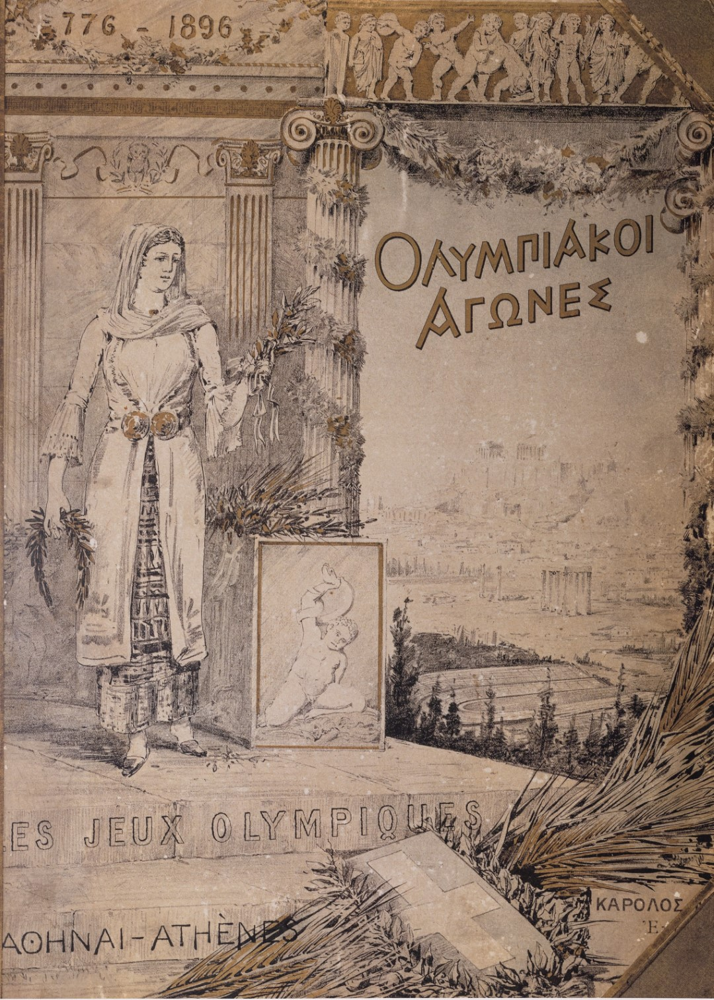

Naslovnica službenog izvješća , GMV 106598
5. - 27. 7. 1924.
VIII. Ljetne olimpijske igre Pariz 1924. • 44 države • 3089 sportaša • 17 sportova • 126 natjecanja • najviše osvojenih zlatnih medalja: SAD (45) • najviše ukupno osvojenih medalja: SAD (99)
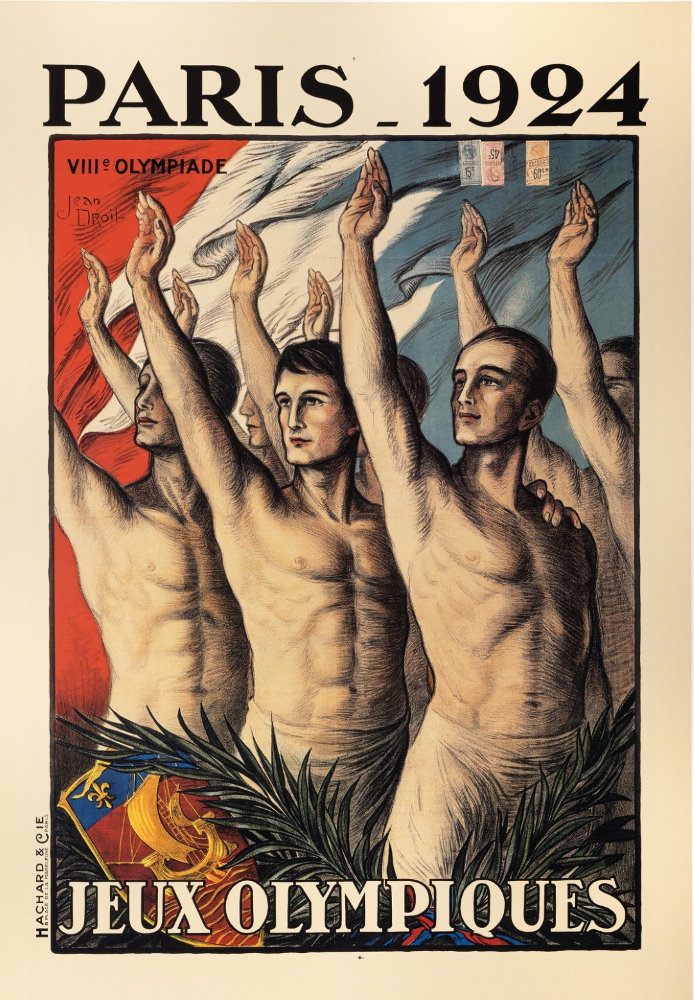
Plakat Olimpijskih igara u Parizu, GMV 106586
1. - 16. 8. 1936.
XI. Ljetne olimpijske igre Berlin 1936. • 49 država • 3963 sportaša • 19 sportova • 129 natjecanja • najviše osvojenih zlatnih medalja: Njemačka (38) • najviše ukupno osvojenih medalja: Njemačka (101)
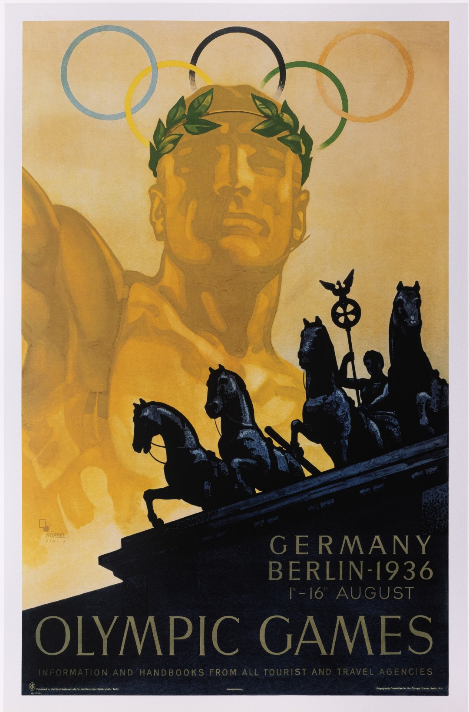
Plakat Olimpijskih igara u Berlinu, GMV 106585
29. 7. - 14. 8. 1948.
XIV. Ljetne olimpijske igre London 1948. • 59 država • 4104 sportaša • 17 sportova • 136 natjecanja • najviše osvojenih zlatnih medalja: SAD (38) • najviše ukupno osvojenih medalja: SAD (84)
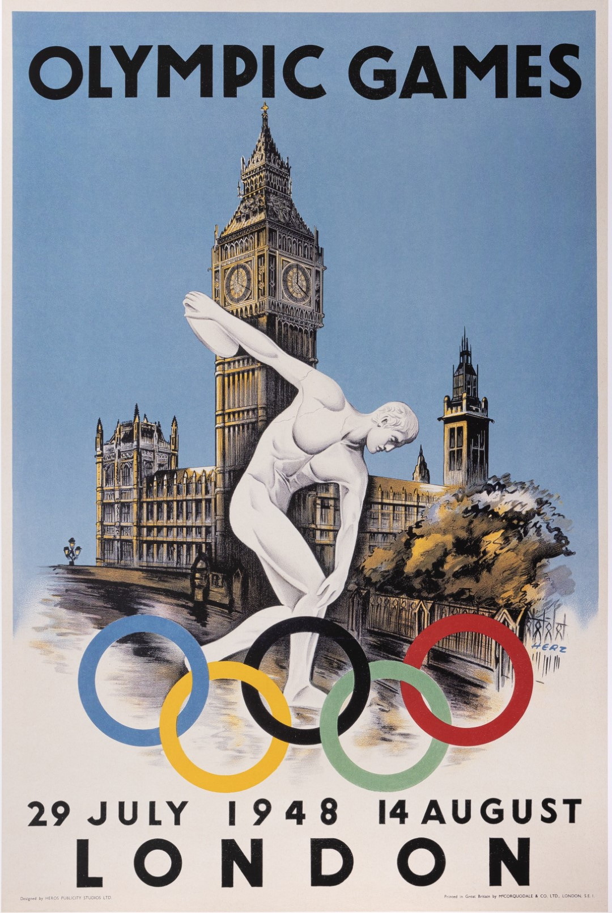
Plakat Olimpijskih igara u Londonu, GMV 106584
19. 7. - 3. 8. 1952.
XV. Ljetne olimpijske igre Helsinki 1952. • 69 država • 4932 sportaša • 17 sportova • 149 natjecanja • najviše osvojenih zlatnih medalja: SAD (40) • najviše ukupno osvojenih medalja: SAD (76)
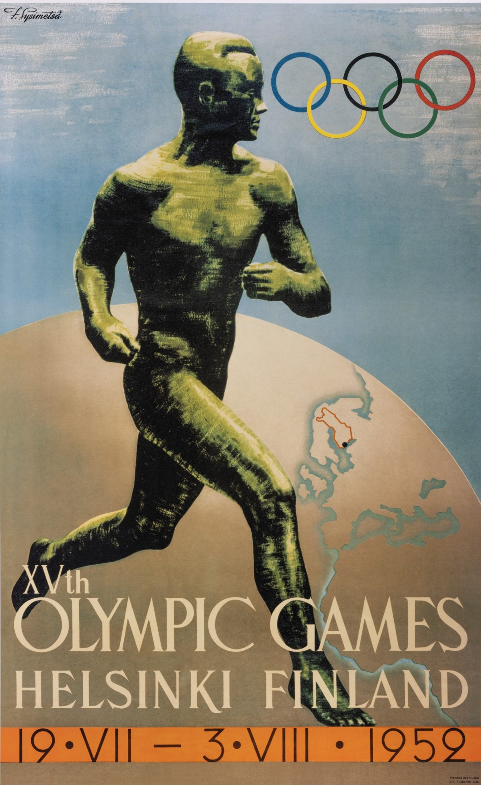
Plakat Olimpijskih igara u Helsinkiju, GMV 106581.
25. 8. - 11. 8. 1960.
XVII. Ljetne olimpijske igre Rim 1960. • 83 države • 5347 sportaša • 17 sportova • 150 natjecanja • najviše osvojenih zlatnih medalja: SSSR (43) • najviše ukupno osvojenih medalja: SSSR (103)
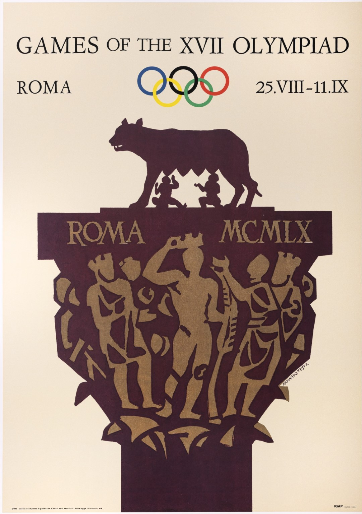
Plakat Olimpijskih igara u Rimu, GMV 106583
10. - 24. 10. 1964.
XVIII. Ljetne olimpijske igre Tokio 1964. • 93 države • 5137 sportaša • 19 sportova • 163 natjecanja • najviše osvojenih zlatnih medalja: SAD (36) • najviše ukupno osvojenih medalja: SSSR (96)
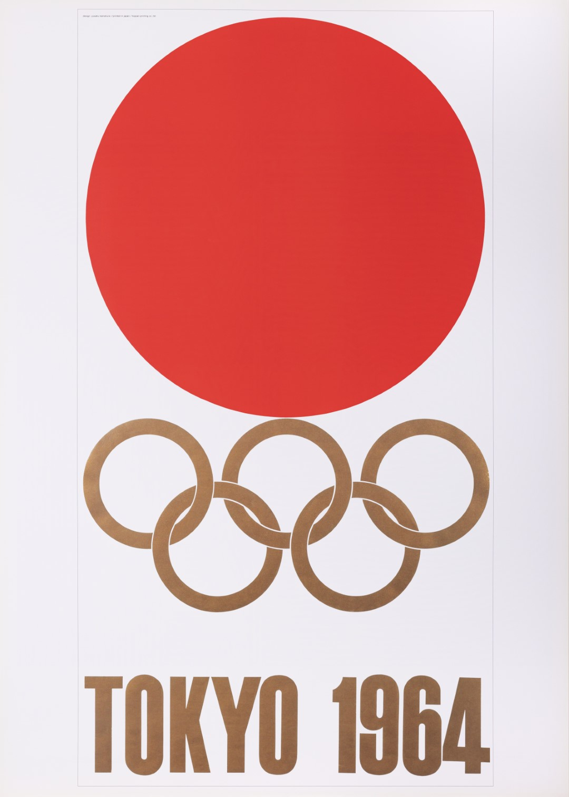
Plakat Olimpijskih igara u Tokiju, GMV 106582
12. - 27. 10.1968.
XIX. Ljetne olimpijske igre Mexico City 1968. • 112 država • 5516 sportaša • 18 sportova • 172 natjecanja • najviše osvojenih zlatnih medalja: SAD (45) • najviše ukupno osvojenih medalja: SAD (107)
26. 8. - 11. 9. 1972.
XX. Ljetne olimpijske igre München 1972. • 121 država • 7134 sportaša • 21 sport • 195 natjecanja • najviše osvojenih zlatnih medalja: SSSR (50) • najviše ukupno osvojenih medalja: SSSR (99)
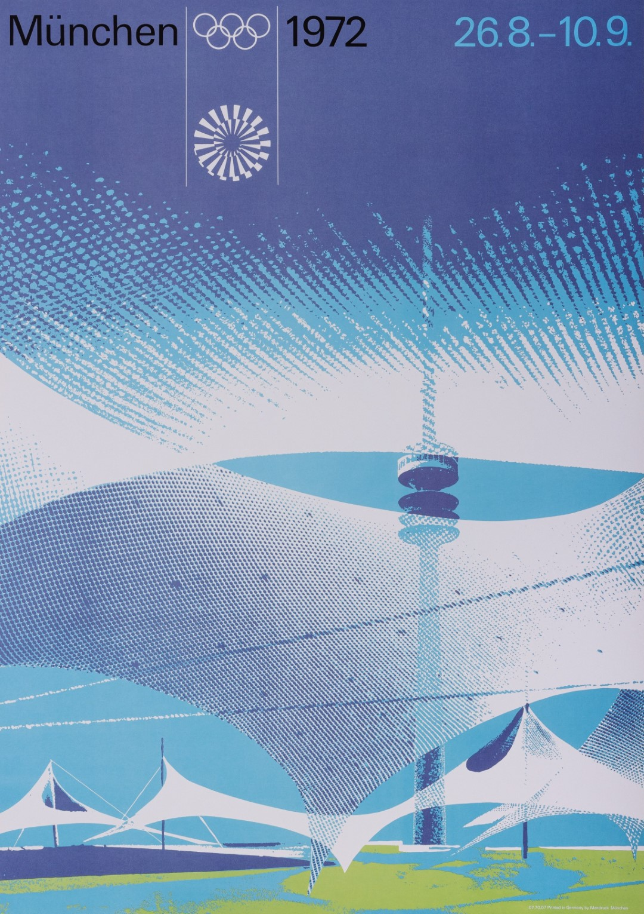
Plakat Olimpijskih igara u Münchenu, GMV 106579
17. 7. - 1. 8. 1976.
XXI. Ljetne olimpijske igre Montreal 1976. • 92 države • 6073 sportaša • 21 sport • 198 natjecanja • najviše osvojenih zlatnih medalja: SSSR (49) • najviše ukupno osvojenih medalja: SSSR (125)
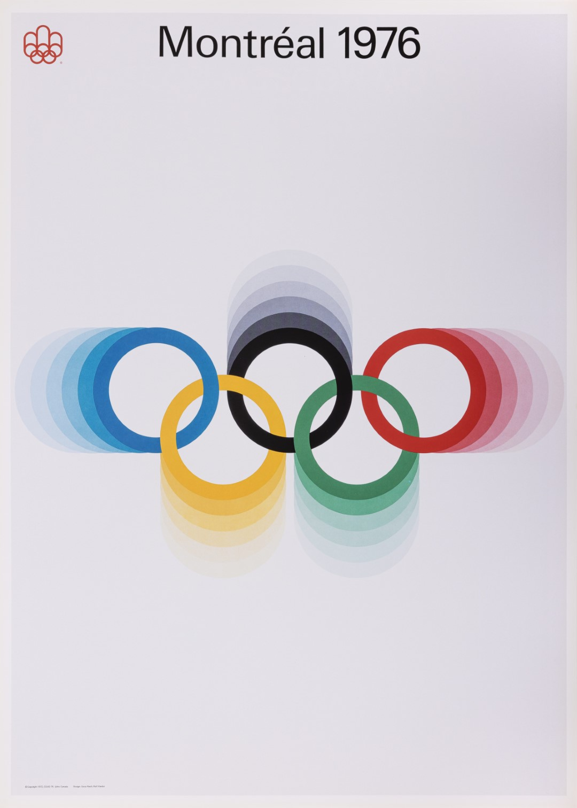
Plakat Olimpijskih igara u Montrealu 1976., GMV 106000
19. 7. - 3. 8. 1980.
XXII. Ljetne olimpijske igre Moskva 1980. • 80 država • 5256 sportaša • 21 sport • 203 natjecanja • najviše osvojenih zlatnih medalja: SSSR (80) • najviše ukupno osvojenih medalja: SSSR (195)
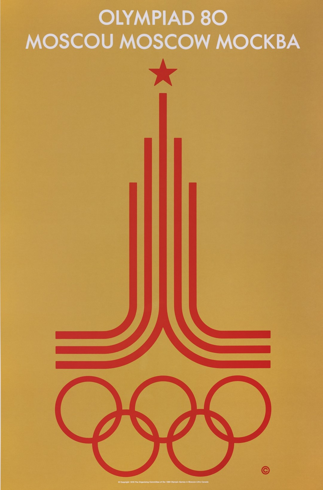
Plakat Olimpijskih igara u Moskvi, GMV 106570
28. 7. - 12. 8. 1984
XXIII. Ljetne olimpijske igre Los Angeles 1984. • 140 država • 6800 sportaša • 21 sport • 221 natjecanja • najviše osvojenih zlatnih medalja: SAD (83) • najviše ukupno osvojenih medalja: SAD (174)
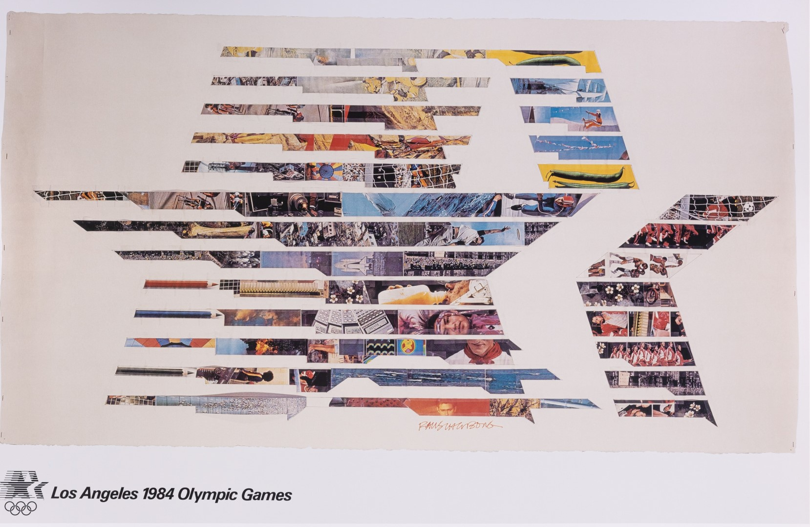
Plakat Olimpijskih igara u Los Angelesu 1984., GMV 106601
17. 9. - 2. 10. 1988.
XXIV. Ljetne olimpijske igre Seul 1988. • 160 država • 8453 sportaša • 23 sporta • 237 natjecanja • najviše osvojenih zlatnih medalja: SSSR (55) • najviše ukupno osvojenih medalja: SSSR (132)
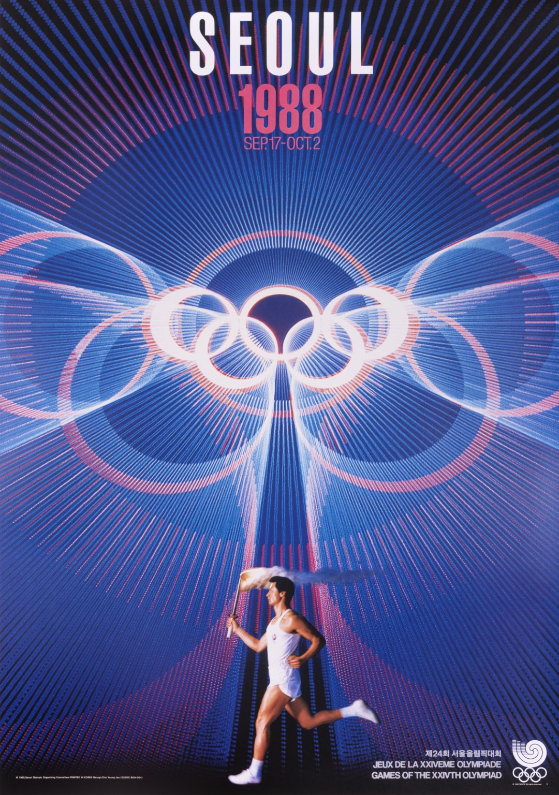
Plakat Olimpijskih igara u Seulu, GMV 106576
25. 7. - 9. 8. 1992.
XXV. Ljetne olimpijske igre Barcelona 1992. • 169 država • 9386 sportaša • 23 sporta • 237 natjecanja • najviše osvojenih zlatnih medalja: Združeni sovjetski tim (45) • najviše ukupno osvojenih medalja: Združeni sovjetski tim (112)
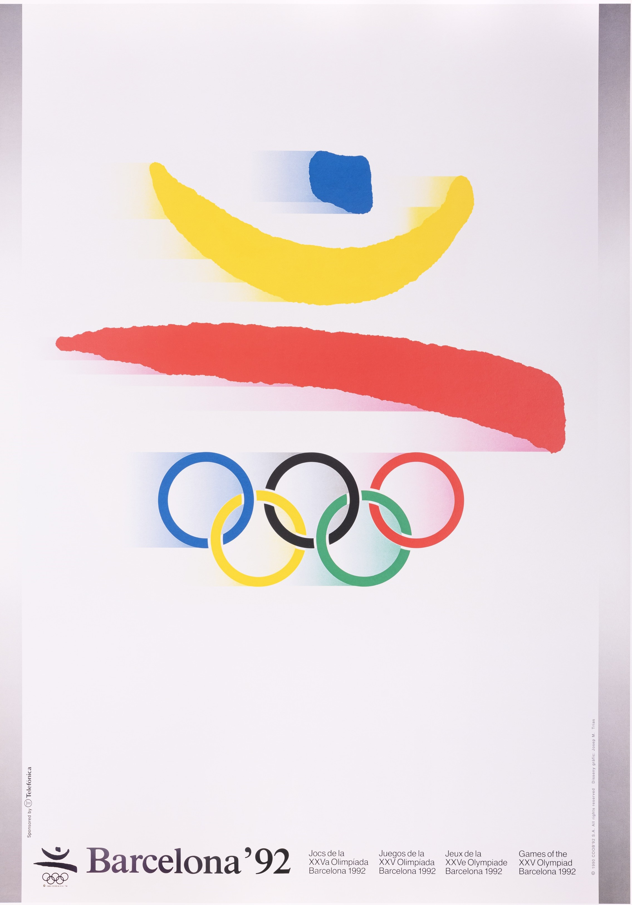
Plakat Olimpijskih igara u Barceloni, GMV 106602
19. 7. - 4. 8. 1996.
XXVI. Ljetne olimpijske igre Atlanta 1996. • 197 država • 10320 sportaša • 26 sportova • 271 natjecanje • najviše osvojenih zlatnih medalja: SAD (44) • najviše ukupno osvojenih medalja: SAD (101)
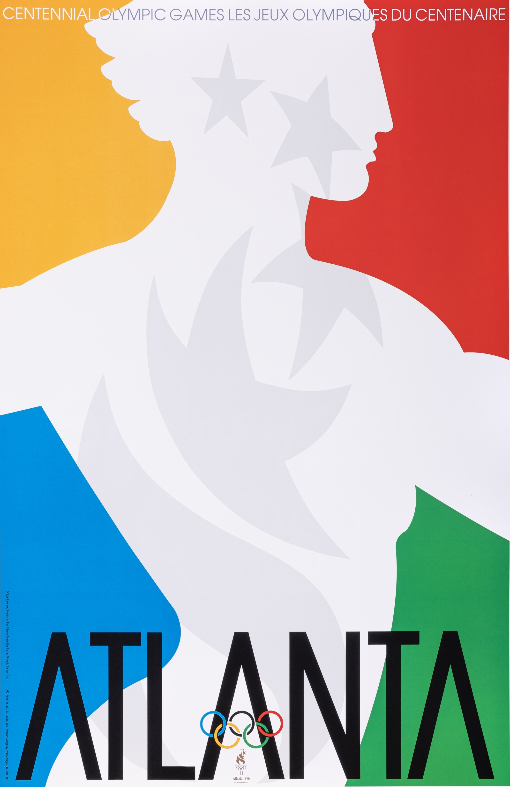
Plakat Olimpijskih igara u Atlanti, GMV 106577
15. 9. - 1. 10. 2000.
XXVII. Ljetne olimpijske igre Sydney 2000. • 199 država • 10647 sportaša • 28 sportova • 300 natjecanja • najviše osvojenih zlatnih medalja: SAD (37) • najviše ukupno osvojenih medalja: SAD (93)
13. - 29. 8. 2004.
XXVIII. Ljetne olimpijske igre Atena 2004. • 201 država • 10557 sportaša • 28 sportova • 301 natjecanje • najviše osvojenih zlatnih medalja: SAD (36) • najviše ukupno osvojenih medalja: SAD (101)